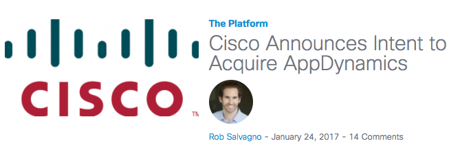
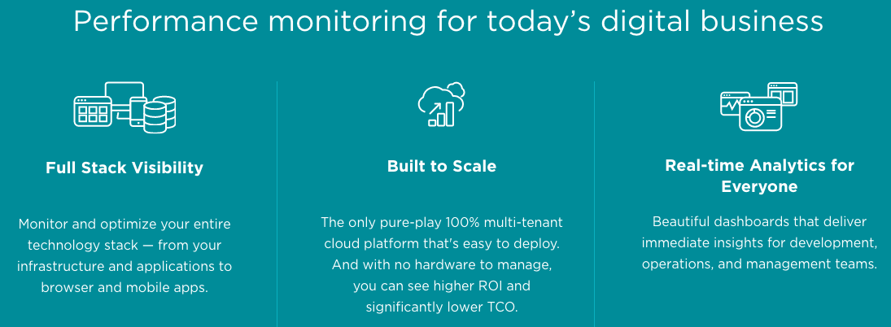

Update on APM
Application Performance Management
By Weidong Shao
思科 37亿美金收购 AppDynamics

AppDynamics
- Was in process of roadshow for IPO
- IPO scheduled to be on 01/26/2017
- IPO target price $12-$14 per share, $1.7B valuation
- Cisco announced intent to acquire days before IPO
What is APM?
- Monitoring and management of performance and availability of software applications
- Strive to detect complex application performance problems and to maintain an expected SLA.
Why Use APM?
- End user experience monitoring
- Runtime application architecture discovery and modeling
- Business transaction profiling
- Deep dive component monitoring
- Data analytics and reporting
Cisco Acquisition: BU
AppDynamics team will report to Rowan Trollope,
Senior Vice President & GM
IoT and Applications
Cisco Aquisition: Why?
- Cisco is a technology and networking company
- The acquisition marks its entry into software
- 提升Cisco整体端到端应用监控、网络监控及基础设施管理solutions
- 数字化转型迫使Cisco 拓展产品领域 - 软件、服务及应用
Rob Salvagno, Head of Cisco M&A
"Digitization and the transition to cloud are forcing the worlds of IT and business to blend together. In the digital economy, applications are critical. ..."
Rob Salvagno, Head of Cisco M&A
"Combining real-time visibility and intelligence at the network, security and application layers is transformational for companies. "
AppDynamics Main Dashboard

App-Centric Server Monitoring


dynamical performance baselining, flexible alerting
flexible deployment


- Another APM market leader
- SAAS service model
- IPO in December 2014
NewRelic Digital Intelligence Platform

Dynatrace (Another Vendor)
Every user, every app, everywhere

AutoShift Update
- PAAS from 2012 does not have APM solutions
- AutoShift project chartered to address data analytics for application performance
- by 2012 Lab and TP(公司技术规划部)
- Main development in US (FutureWei)
- Phase 1 to complete in February 2017
- Phase 2 to charter in March 2017
能力中心预研项目建议
- 受益项目：CMP, IES, Open ECOMP
- 应用的容器化部署 （PAAS2.0 及 Autoshift Phase 2）
- 应用的多层架构及DC 基础设施可视化展现
- 基于JavaScript 的Dashboard及数据可视化新技术
- SAAS模式的支持
能力中心预研项目建议
- VM/Host/Application 的APM 数据采集机制及用户可编程的采集控制器
- 数据采集与应用程序的分离 （新应用可以做最小改动而集成）
- 灵活支持不同编程语言(java, C++, python)及开发框架
- 动态确定数据采集对象及过滤
能力中心预研项目建议
- 实时数据分析能力PoC
- 跨层故障定位, 分布式应用性能管理
- 与AutoShift Phase 2 并行开发, 借鉴其机器学习算法
- 侧重Data Center， NFV 及虚拟网络方面的应用场景
预研项目建议 - 核心能力
SAAS - 云化
AI - 智能化
Automation - 自动化,
Full-Stack and Visual - 跨层、全栈 可视化
Thank You!
weidong.shao@huawei.com/00754682
+1 (408) 463-6805